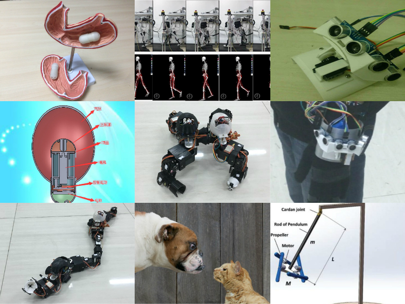

|
 |
In undergraduate study, I did several research project on system design and control, include robotic and different sensor networks.
In graduate study, I learned machine learning and did research on optimization and networks. During my study, I find that applying machine learning methods (in prediction or design controller)
can make great improvement on system robust and accuracy. I wish to continue researching on applying machine learning method to build Intelligent
System for my Ph.D. study.
Control System & Robotics
Deformable Snake-Quadruped Robot
Deep learning techniques have been used to achieve the state-of-the-art performance for a variety of applications (computer vision, natural language processing, and Go).
Wireless Intragastric Capsule
Deep learning techniques have been used to achieve the state-of-the-art performance for a variety of applications (computer vision, natural language processing, and Go).
Wind Pendulum Control System
Deep learning techniques have been used to achieve the state-of-the-art performance for a variety of applications (computer vision, natural language processing, and Go).
Networks & Sensor Networks
I am interested in reconciling robust control with deep reinforcement learning for safety-critical AI applications. I
d systems with deep neural nets in the loop.
Optimization
Optimization can be viewed as a control problem. By viewing the gradient of the cost function
as a plant one wants to control, the optimization problem becomes an output regulation control problem.
Consequently, first-order optimization methods can be viewed as controllers regulating the plant. For example, gradient descent,
Nesterov’s method, and heavy-ball method can all be viewed as special cases of the proportional-integral-derivative
(PID) controllers. My current research focus is on translating “controllers” into “optimization
methods” for large-scale unconstrained and constrained optimization problems in machine learning, control, robotics, smart buildings, and power systems.
Machine Learning
Publication